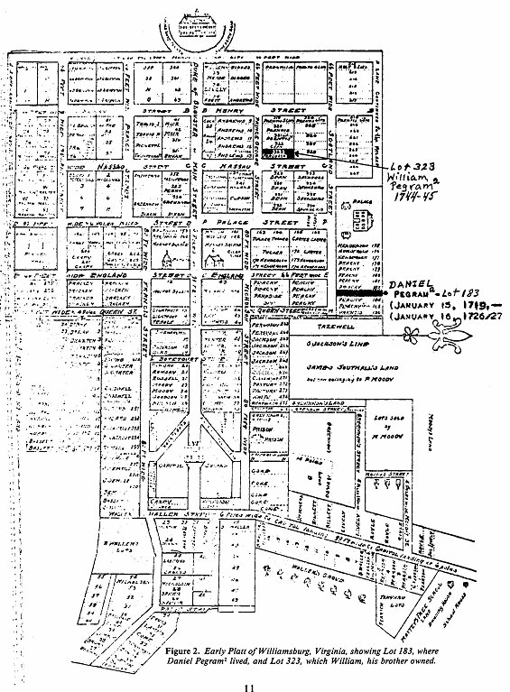

|
|
|||||||||
|
|
DANIEL PEGRAM2 (George1). The earliest record found of Daniel Pegram was his apprenticeship to Thomas Whitby as a carpenter (27). Daniel was probably about 14 years of age when he was apprenticed on 24 January 1703/04, since most apprentices assumed duty at about this age. Daniel apparently served until 12 January 1710/11, according to the terms of his contract. It is likely that the latter date was his 21st birthday, as many apprenticeships terminated when the apprentice reached this age. If this was correct, Daniel would have been born 12 January 1689/90. Following are the contract and court records relating to Daniel's indenture:
At a court held for York County on 24 January 1703/04, the following entries were made in the record:
This indenture states that Daniel Pegram was an orphan of York County, but does not mention his father's name as was the case with his brother, George, whose indenture of 24 June 1704 was recorded on page 228 of the same volume of records. Since George was mentioned as the son of George deceased, since Daniel was mentioned as an orphan, since both were apprenticed at about the same time (probably being about 13-15 years of age), since there are no known records of any Pegram other than George1 since their apparent ages are compatible with George' as their father, and since John was named as administrator of the will of Daniel's wife Sarah, it appears conclusive that John, William, Daniel and George, were all the sons of George' and Miss Hunt of York County, Virginia. The next record found of Daniel Pegram, after his apprenticeship record of 1703/04, was a record in the Court of Public Claims held for York County 1 October 1712. Daniel Pegram presented a claim to the court for having taken up a runaway negro man (28). The following is a court record of 18 January 1713:
Another record appeared on 15 January 1719:
|
|
it thus appears that Daniel Pegram paid 15 schillings in addition to the grain of corn, as pointed out in the appended letter. He built a house on the property and lived there until his death in 1726. His wife, Sarah sold the property shortly after Daniel's death, as directed in his will. Sarah died the following year. It appears that she had been married previously, as is suggested from the naming of her son David Foese in her will. He was not named in the will of her husband Daniel, the year prior. A number of workers maintain that Daniel's wife was Sarah Hunt, the same family name as his mother. The Hunt name was one of the most prevalent in York County. There were seven Sarah Hunts listed in the Register of Births of Charles Parish, York County, 1648-1789 (135). All of these were too old to have been the wife of Daniel Pegram, with the exception of one, born 25 June 1695. Daniel's wife may well have been a Hunt, but no proof of this has been found by the compiler. The appended letter was written by Mrs. Rutherfoord Goodwin, Research Associate of Colonial Williamsburg, to Mr. Walter Folger, who has been researching the Pegram family for many years. The letter gives considerable authentic information on Daniel Pegram. There is some duplication of information already given, but the importance of the data relative to this early generation justifies this.
January 31, 1957 Mr. Walter Weston Folger Dear Mr. Folger: Most of the numbers which were assigned to Williams-burg lots when the town was laid out (ca. 1699-1705) can still be identified from plats and maps which have survived. Although the earlier plats have disappeared, the numbers originally given the half-acre lots continued in use throughout the eighteenth century. A half-acre lot was granted the purchaser by the trustees for the City of Williamsburg for a small sum, with the provision that a house be completed on the lot within 24 months, or the lot would revert to the trustees. Tot 11183, which the trustees sold to Daniel Pegram in January, 1/19/20, for fifteen shillings, was below the Governor's Palace on the north side of Scotland Street. No house stands on this site today. Daniel Pegram built a house on lot 183, which he occupied at the time of his death in 1726. His will, which was proved and recorded in York County Court on July 18, 1726, listed his children and ordered that "...every one of my Children namely Daniel Pegram, Edward Pegram, Mary Pegram and Sarah Pegram have each of them a Ring of the Value of twenty Shillings to be raised out of my Estate," and also ordered that his "house and lot in Wmsburgh" be sold. He left the remainder of his estate to his wife Sarah, "to be disposed of as she thinks fitt," and named her his sole executor. [See York County Records, Orders, Wills, Book 16, page 400.] An inventory of his real and personal estate, recorded September 19, 1726, mentioned "one house & lot in Wmsburgh" and his furniture, furnishings, books, etc. and a chest of "Carpenters Tools." (See Ibid., Book 16, page 413.) His widow, Sarah Pegram, sold his "house and lot of ground in Williamsburg marked in the plot of the said city by the figures 183" to Lewis Burwell for £10 deed of sale recorded in York County January 16, 1726/27. (See Deeds, Bonds, Vol. 3, page 469.) Sarah Pegram evidently died soon after her husband, for her will was recorded in York County, June 19, 1727. She had apparently been married prior to her marriage to Daniel Pegram. She left her "Son David Foese his freedom and all the tools formerly belonging to my Husband Daniel Pegram." Her husband had carpenter's tools listed in his inventory; and her will would indicate that her son David Foese had been apprenticed to him. Her will also mentioned her "five Children, Mary, Sarah, Daniel, George & Edward," among whom her personal estate was to be divided. John Pegram was appointed her executor. The inventory of Sarah Pegram's estate, recorded in York County June 21, 1727, listed cattle, horses, and household furnishings valued at £53:8:4-1/2. (See, Wills, Inventories, Book 16, page 465, 476.) The house on lot 183 probably disappeared; for in 1745 the trustees of the City granted lots 182, 183, and 184, to Lewis Burwell for £2.5.0, with the usual building clause included in the deed. (See York County Records, Deeds, Book 5- December 4, 1745.) Still later the lot 183 was included in 6 lots owned by Peyton Randolph (possibly used as stable and pasture land). These six lots were sold by the executors of Mrs. Betty Randolph, (widow of Peyton Randolph) to Joseph Hornsby in February, 1783. Hornsby also purchased the house and lots on Nicholson Street, where Peyton and Betty Randolph had lived. The property passed from Hornsby to the Peachy family in the nineteenth century. The enclosed plat shows the location of lot 183, with the name Peachy on it. Sincerely,
(Mrs. Rutherfoord
Goodwin)
|
|
 |
|
The following are wills and inventories of Daniel Pegram and his wife Sarah. Daniel's will was written May 27, 1726, and was presented by his wife Sarah, and ordered probated, July 18, 1726. Daniel thus died in this brief interval. Sarah, his wife, died the following year. Copies of the original documents are in hand, but they are difficult to read. York County, Virginia Daniel Pegram's Will In the name of God, Amen, I, Daniel Pegram of York County being very sick and weak but in sound sense and memory, thanks to God, therefore calling soon and the mortality of the body do make and ordain this my last will and testament and in manner & form following first myself into the hands of God that gave it my body the ground to be buried in a Christian like manner at the discretion of my executor hereafter named. Item my will is every one of my children, namely Daniel Pegram, Edward Pegram, Mary Pegram and Sarah Pegram have each of them a Ring of the state (estate ?) of twenty shillings to be _________________out of my estate and my house and lot in Wmsburg is to be sold all the rest of my estate I give to my ______________ to be disposed of as she thinks fitt and her I do appoint my sole executor _____________makes all other wills__________________ hereunto set my hand & seal /S/ Daniel Pegram seal Robt. This w
________________________________________________________________sented
in court by Daniel Pegram An inventory of the estate (both real and personal) belonging to Daniel Pegram, deceased. To- one house & lot in Wmsburg & feather beds & bed steds, 2 pr curtains & furniture, 1 large looking glass, 1 chest of drawers, 7 leather chairs, 3 tables, 1 pr of andirons & sconces, 1 iron candlestick, 1 iron fender, 2 _________& heat ______, 4 iron pots, 1 grindstone, 4 pr pot hooks, one pot rack & several iron hooks, 1 frying pan, 2 iron wedges, 2 hand axes, 2 brass kettles, 1 bellmattle skillet, 1 spice mortar, 1 pr spoon moulds, 6 patty panns, 5 pewter ovens, 13 pewter ______, 18 plates and spoons, 6 knives & forks, 1 brass skimmer, 1 brass ladle, 2 flesh forks, 2 pr horse fleasines (?), 2 ____________, 1 stone chamber pot, 1 gelly pot, 1 ________ pot, 1 large Bible, 1 small do The Whole Duty of Man with several ________other books, 5 chests, 1 do of carpenter tools, 2 trunks, several small _______besides other _____for my family, 11 head cattle _______ 28 Geese, besides a ______ ______ _____fowls, 2 pr ______ , 5 waterpails, 2 ________, 1 dills, 1 washing tub ___________ & scrubbing brush, 2 bag feathers, 2 lampers, do 2 hand, 2 pr of boots, 2 hair __________, 1 pepper _______________.
Sept. 19, 1726 __________Court by Sarah Pegram, the executor to be admitted.
Note: The original records are in very poor condition. Many of the blanks are where sections of the pages are completely torn or worn away. The house and lot mentioned is Lot #183 as shown on the plat of Williamsburg. Sarah Pegram's Bond Know all men by these presents that we, Sarah Pegram, Patrick Ferguson & William Sledd of the County of York are held and firmly bound under John Halloway, Henry Taylor, Lawrence Archibald Blair, Thomas Nelson, Graves Parks, William Aard & Edward Tabb & ca gent justices of the county aforesaid and the sum of three hundred pounds Sterling, to which payment well and truly to be made to the said justices, their heirs & since or some of them will bind ourselves and every one of our heirs each and alone, also jointly, and severally, firmly by these presents sealed with our seals, dated this 18th July 1726. The condition of this obligation is such that if the above bounden Sarah Pegram, executor of the last will and testament of Daniel Pegram, dec'd, do make or cause to be made a true and perfect inventory of all & singular the goods, chattels and credits of the said dec'd. which have or shall come to the hands or possessions or knowledge of the said executor or into the hands of possession of any person or persons for her and the same made exhibit or cause to be exhibited into the County Court of York at such time as they shall be thereunto required by the Court and the same goods, chattels and credits of the said dec'd. at the time of his death which at any time after shall come to the hands and possession of Sarah Pegram, the dec'd. executor or into the hands & possessions of any person or persons for her and further do make a true & just acc't. of her actings and doings therein when thereto required by the said court and also pay and deliver to the legacys contained & specified in the said testament as far as the sd goods, chattels and credits will be thereunto exacted according to the value thereof and the law shall charge her then this obligation to be void and of none effect otherwise to remain in full force and value.
Sarah Pegram
Seal At a court held for York County, July 18th 1726, This bond was presented and acknowledged in court by the partys thereto & admitted for record. Test - Phil Lightfoot Sarah Pegram's will recorded
19 June 1727 York County, Virginia In the name of God, Amen. I Sarah Pegram, being of weak body but of perfect sense and memory, do make this, my last will and testament in manner and form following. I give to my son David Foese his freedom and all the tools formerly belonging to my husband Daniel Pegram. Item I give to my daughter Mary my best bed furniture thereunto belonging and a chest of drawers and large looking glass. Item I give to my daughter Sarah my second best bed and furniture thereunto belonging and such other chairs and a brown table and after my death and funeral expenses are defrayed, the rest of my estate equally to be divided between my five children, Mary, Sarah, Daniel, George & Edward. I do likewise appoint John Pegram to be executor of this, my last will and testament. Sarah Pegram Seal Signed and sealed in Wm. Rudder At a court held for York County, June 19th 1727, this Will and Testament of Sarah Pegram, presented in court by Patrick Ferguson. (John Pegram the executor therein named having relinquished) and being proved by the oaths of both witnesses thereto is hereby admitted to record. Test Phil Lightfoot Sarah Pegram An appraisment of the estate of Sarah Pegram, dec'd. taken 21st June, 1727 by order of the York Court. 4 cows & calves at 25 S to 4
do D 22 £9.8 to 2 two year old heifers at 15 S.
Pat Fergusson, Adm. In Hubbard, John Mundell, R. Stewart. At court held for York County, July 17th 1727. This inventory and appraisment of the estate of Sarah Pegram, dec'd. presented in court and admitted to record. Test Phil Lightfoot
Sarah Pegram lived only a short time after her husband's death. Her will was recorded 19 June 1727, and her estate inventoried on 17 July 1727. She named her five children (32): MARY3, SARAH, DANIEL, GEORGE and EDWARD. In addition to these five children, she named her son David Foese, evidently by a previous marriage. To him she gave his freedom, and all of the tools belonging to her late husband, Daniel. It would appear that David Foese was apprenticed to Daniel at the time of the latter's death, as stated by Goodwin (14). In Daniel's will, probated 16 July 1726, only four children were named. George was not included. Since he was named as a son in Sarah's will, he evidentally was born after his father's death. There is no indication, as with David Foese, that George was other than the son of Daniel and Sarah. As shown later he apparently moved to Dinwiddie County, where his older brothers Daniel and Edward had settled. It is interesting to note that the inventory of property of both Daniel and his wife Sarah listed a book, "The Whole Duty of Man". This was a daily devotional book that was printed in England in 1648, or seventy eight years prior to Daniel's death. It is likely that the book would have been out of print in this length of time, and therefore it had probably been handed down in the family to Daniel2, and passed on to one of his children. There is a record of property apparently belonging to Sarah Pegram that was not mentioned either in her will or in that of her husband's. In a return of settlement of Sarah Pegram's estate, dated 19 May 1729, two years after her death, mention is made of a receipt of Lb. 2s. 6 from . . . Hartfield for rent of the plantation after death . . . year 1727. The record is badly mutilated (6). On 17 April 1737 the Court approved that Edward Pegram should be bound (apprenticed) to Matthew Harfield of Charles City, County, to learn the trade of a bricklayer, (State Lib. Let. 11-22-21) (6). Matthew Harfield was probably the same individual as Hartfield, that rented Sarah Pegram's plantation following her death ... year 1727. It will be recalled that James Harfield, son of Mathew Harfield was named in the will of Samuel Dyer, along with John Pegram3, in 1757. It is not known whether the following has any relation to Daniel and Sarah Pegram, but it is included here as a matter of interest. In the yard of old Bruton Parish Church in Williamsburg is a tombstone with the upper left corner broken off, together with a part of the inscription. It reads . . . E Lies Y Pegram who died September Ye 28th 1727. The E is of course the last letter of HERE. The Y shows as the last letter of the Christian name of the deceased. It could have been Mary, who knows. The death date is several months after that of Sarah, wife of Daniel. It might have been a child of one of Daniel's brothers. |
| Back | Next | Index | Table of Contents | References | |